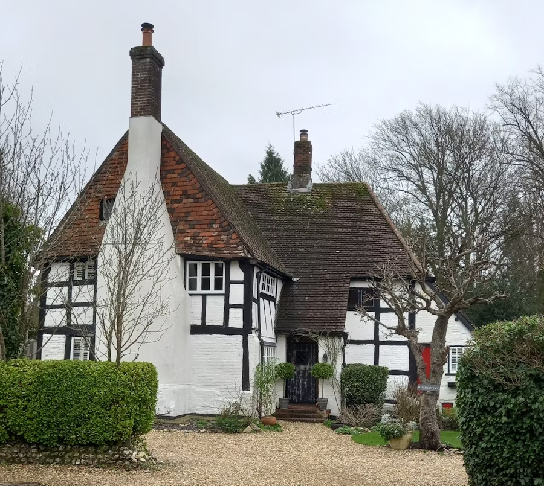
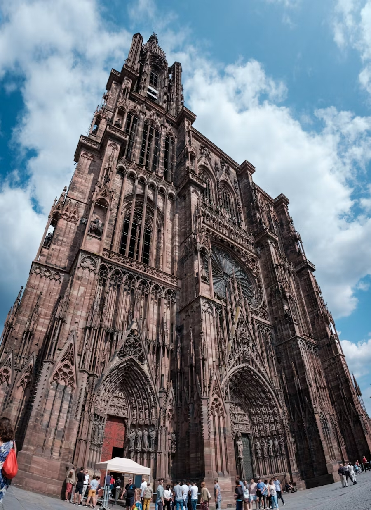

English Styles & Materials
Design Elements and Materials in England
English architecture has a lot of different styles which include Gothic, Tudor, and later on Georgian and Victorian.
Stone, brick, and wood were all over in traditional English buildings, with thatched roofs being common in rural areas. Over time, advancements in engineering enabled the rise of steel-framed structures and glass façades in urban developments.
 